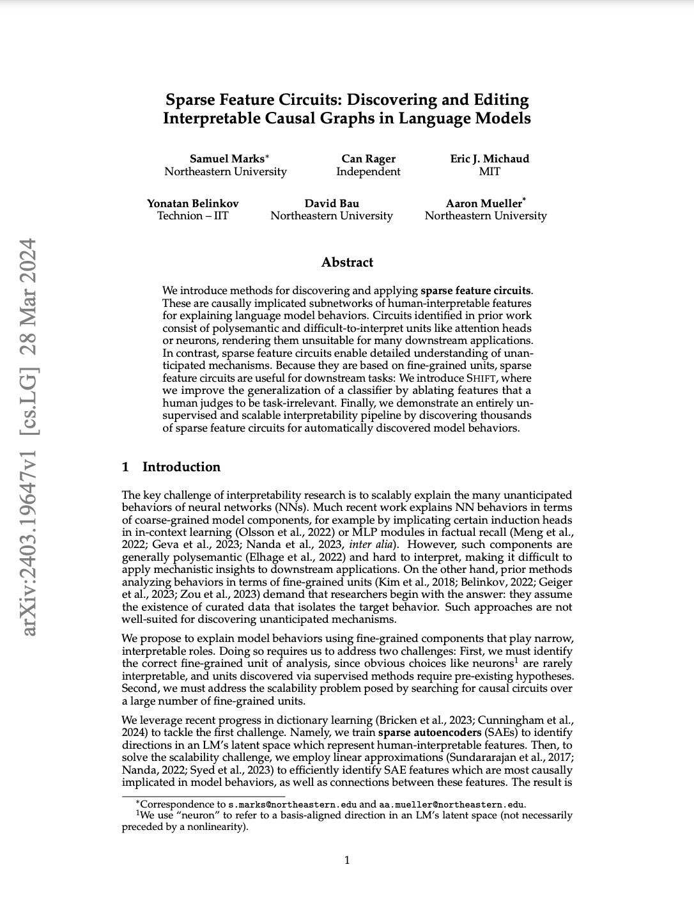
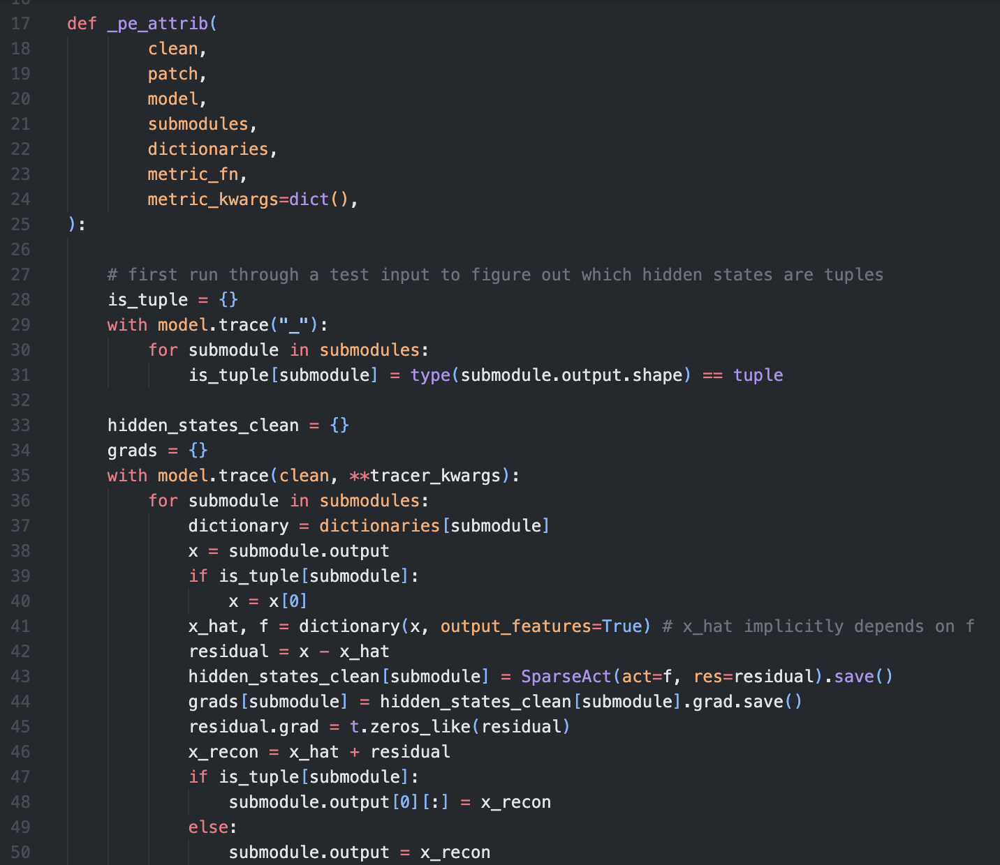
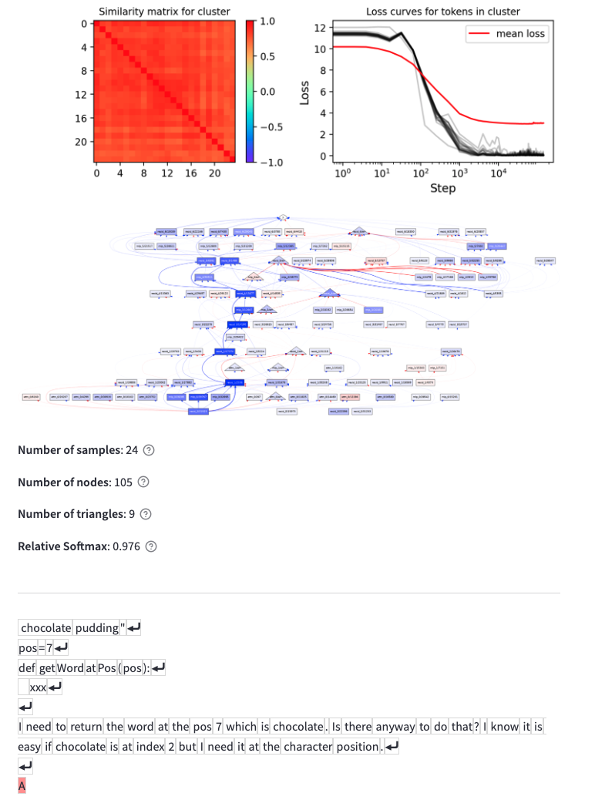
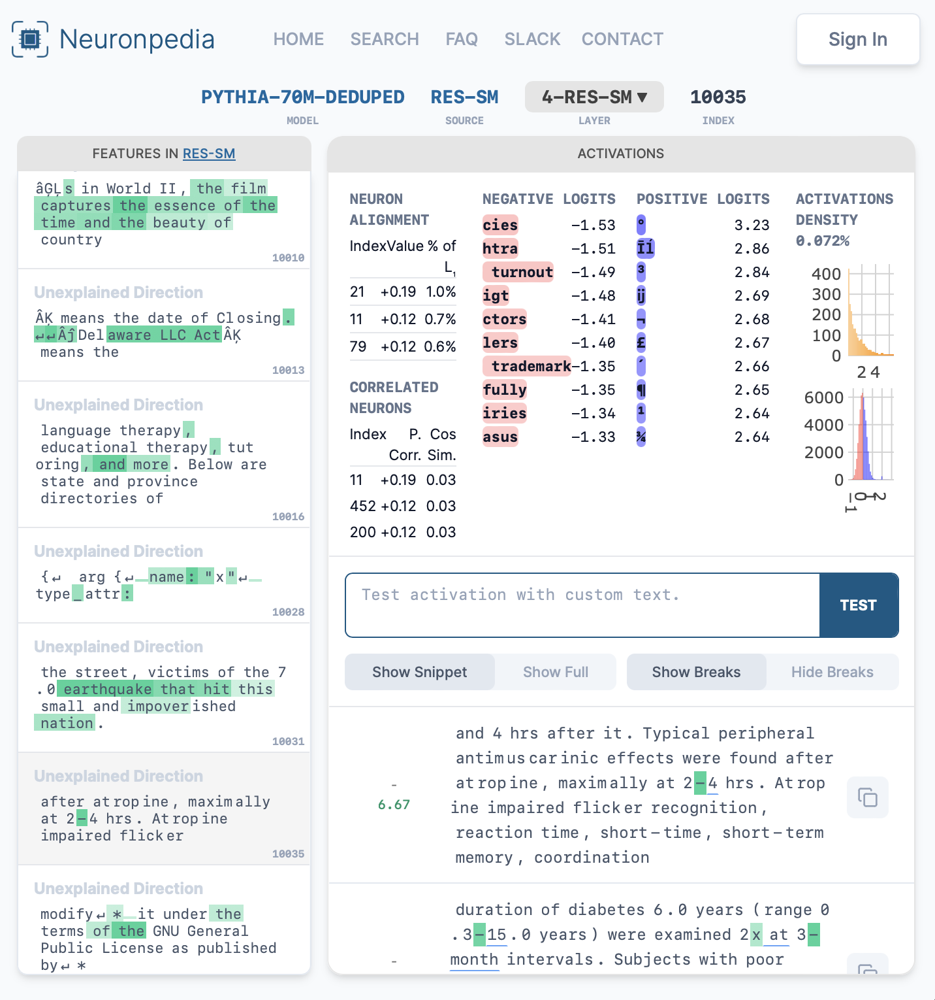
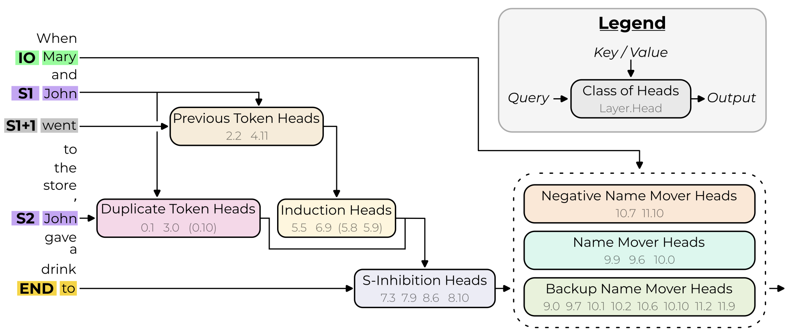
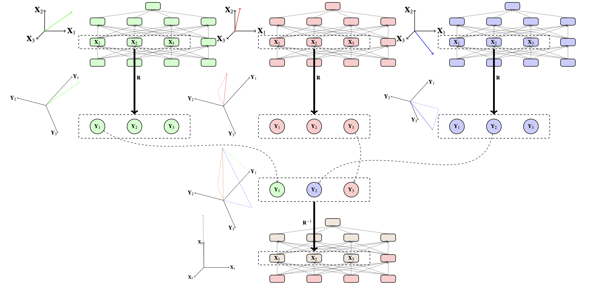
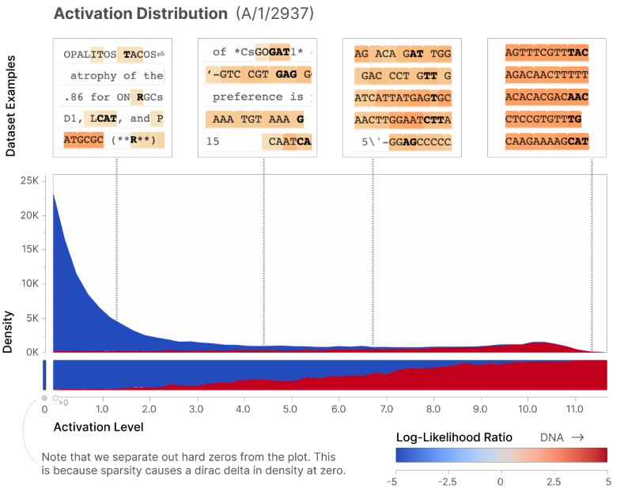
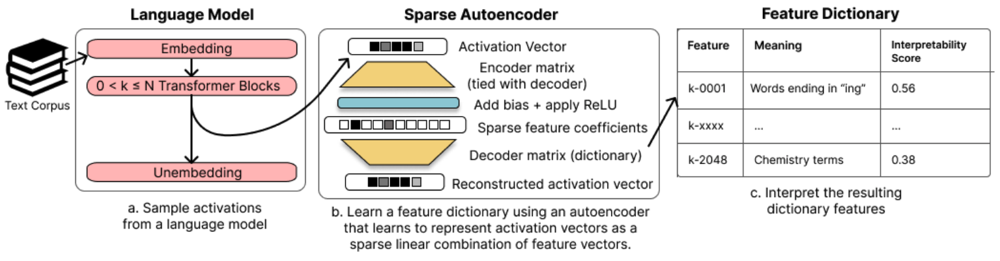
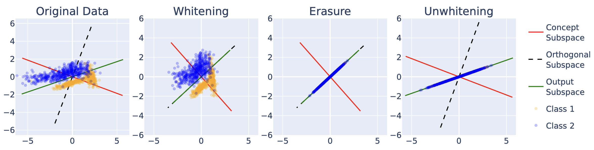
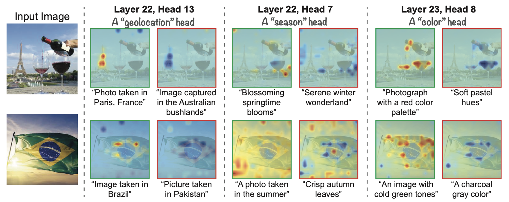

ArXiv
Preprint

Source
Code

Clusters
Demo

Interactive
Features
Demo
We introduce methods for discovering and applying sparse feature circuits. These are causally implicated subnetworks of human-interpretable features for explaining language model behaviors. Circuits identified in prior work consist of polysemantic and difficult-to-interpret units like attention heads or neurons, rendering them unsuitable for many downstream applications. In contrast, sparse feature circuits enable detailed understanding of unanticipated mechanisms. Because they are based on fine-grained units, sparse feature circuits are useful for downstream tasks: We introduce Shift, where we improve the generalization of a classifier by ablating features that a human judges to be task-irrelevant. Finally, we demonstrate an entirely unsupervised and scalable interpretability pipeline by discovering thousands of sparse featur circuits for automatically discovered model behaviors.
Our work builds upon insights from work that causally implicates components or subgraphs in model behaviors:
Kevin Wang*, Alexandre Variengien*, Arthur Conmy*, Buck Shlegeris, Jacob Steinhardt. Interpretability in the Wild: a Circuit for Indirect Object Identification in GPT-2 Small. 2023.
Notes: Proposes path patching to causally implicate subnetworks in observed model behaviors. Localizes indirect object prediction to a subset of model components.
Atticus Geiger, Zhengxuan Wu, Christopher Potts, Thomas Icard, Noah D. Goodman. Finding Alignments Between Interpretable Causal Variables and Distributed Neural Representations. 2024.
Notes: Discovers alignments between hypothesized causal graphs and subgraphs in neural networks for performing a given task.
Our work directly builds upon insights in other work that has examined disentangling interpretable features from hard-to-interpret neural latent spaces:
Trenton Bricken*, Adly Templeton*, Joshua Batson*, Brian Chen*, Adam Jermyn*, Tom Conerly, Nicholas L Turner, Cem Anil, Carson Denison, Amanda Askell, Robert Lasenby, Yifan Wu, Shauna Kravec, Nicholas Schiefer, Tim Maxwell, Nicholas Joseph, Alex Tamkin, Karina Nguyen, Brayden McLean, Josiah E Burke, Tristan Hume, Shan Carter, Tom Henighan, Chris Olah. Towards Monosemanticity: Decomposing Language Models With Dictionary Learning. 2023.
Notes: Leverages sparse autoencoders to decompose polysemantic neurons into monosemantic sparse features.
Hoagy Cunningham, Aidan Ewart, Logan Riggs, Robert Huben, Lee Sharkey. Sparse Autoencoders Find Highly Interpretable Features in Language Models. 2024.
Notes: Contemporaneous sparse autoencoder dictionary work. This paper introduces a parentheses matching feature-based algorithm which inspired our work.
There is a large literature on mitigating robustness to spurious correlations:
Nora Belrose, David Schneider-Joseph, Shauli Ravfogel, Ryan Cotterell, Edward Raff, Stella Biderman. LEACE: Perfect linear concept erasure in closed form. 2023.
Notes: Proposes a method for erasing concepts. Belrose et al. apply LEACE to reduce gender bias.
Yossi Gandelsman, Alexei A. Efros, Jacob Steinhardt. Interpreting CLIP's Image Representation via Text-Based Decomposition. 2024.
Notes: Proposes a method for interpreting and ablating undesired attention heads in CLIP.
The paper can be cited as follows.
Samuel Marks, Can Rager, Eric J. Michaud, Yonatan Belinkov, David Bau, and Aaron Mueller. "Sparse Feature Circuits: Discovering and Editing Interpretable Causal Graphs in Language Models." Computing Research Repository,
@article{marks2024feature,
title={Sparse Feature Circuits: Discovering and Editing Interpretable Causal Graphs in Language Models},
author={Samuel Marks and Can Rager and Eric J. Michaud and Yonatan Belinkov and David Bau and Aaron Mueller},
journal={Computing Research Repository},
volume={arXiv:2403.19647},
url={https://arxiv.org/abs/2403.19647},
year={2024},
}